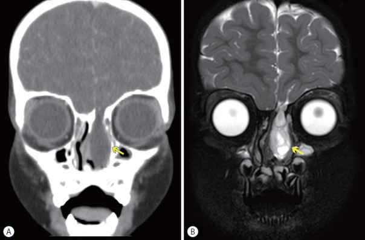
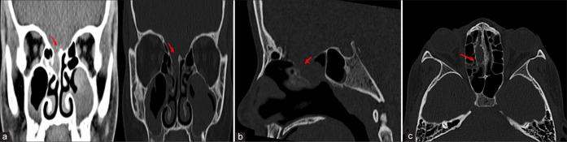
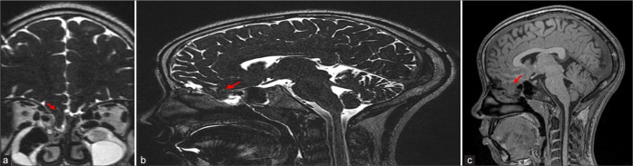
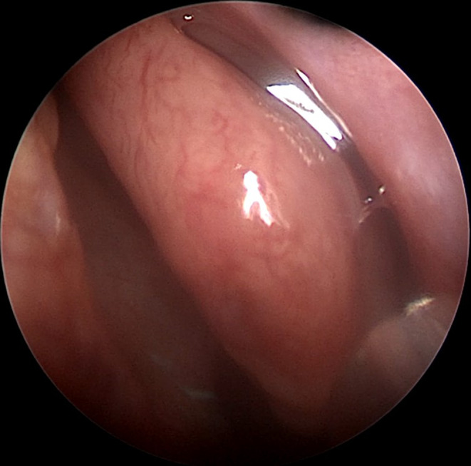

244 — Rò dịch não tủy sau chấn thương nền sọ ở trẻ: định vị bằng HRCT/MRI & chỉ định vá / Paediatric post-traumatic CSF leak
Tags: pattern:ro-dich-nao-tuy pattern:khuyet-xuong vung:nen-so vung:xoang protocol:HRCT protocol:MRI-T2-nang protocol:CT-cisternography incidentaloma:khi-noi-so
Mức chắc chắn (certainty): tổng hợp y văn (literature synthesis) — số liệu từ tổng quan nhi khoa (PMC9082117), đoàn hệ 499 bệnh nhân vỡ nền sọ (PMC13157939), tổng quan chẩn đoán (PMC11129547) và tổng quan hệ thống (PMC12398667); ca minh họa từ hai bài CC BY-NC/CC BY-NC-SA. Không suy diễn ngoài nguồn.
Bài này tập trung rò dịch não tủy (CSF) do chấn thương nền sọ ở trẻ: xác nhận dịch, định vị lỗ rò, theo dõi tự đóng và chọn thời điểm vá. Vỡ sọ tiến triển (growing skull fracture) và tổn thương mạch cổ đã có ở 231; chấn thương đầu nhẹ/PECARN ở 232.

*Bên trái (A): CT coronal cửa sổ xương — khuyết xương ở trần sàng bên trái cạnh gai gà (mũi tên vàng). Bên phải (B): MRI T2 coronal — khối tăng tín hiệu T2 đồng dạng dịch não tủy chui qua khuyết xương xuống hốc mũi, tức màng não–não thoát vị (meningoencephalocele). Đây là lý do phải phối hợp CT (xương) với MRI (mô mềm/dịch). Nguồn: Choi JI, Kim SD, J Korean Neurosurg Soc 2022, PMC9082117, Fig. 2, CC BY-NC 4.0 (nguyên bản).*1. Tổng quan bệnh học – cơ chế hình ảnh
- Định nghĩa: rò CSF là sự thông thương giữa khoang dưới nhện và môi trường ngoài (mũi, tai, vết thương) do rách màng cứng + khuyết xương nền sọ. Ở trẻ, nguyên nhân hay gặp là chấn thương đầu kín (tai nạn giao thông, ngã), sau đó là bẩm sinh và do phẫu thuật.
- Dịch tễ (số cần nhớ):
- Rò CSF gặp ở 2% tất cả chấn thương đầu ở trẻ và 12–30% các ca vỡ nền sọ (PMC9082117).
- Thời điểm: 55% xuất hiện trong 48 giờ, 70% trong tuần đầu; 10–20% xuất hiện muộn sau nhiều năm (PMC9082117).
- Diễn tiến tự nhiên: 20–30% ngừng trong 1 tuần, 70% ngừng trong vài tháng, phần lớn trong 6 tháng (PMC9082117).
- Viêm màng não là biến chứng nguy hiểm nhất: ~24% ở rò mũi không điều trị (PMC9082117); tử vong do viêm màng não sau chấn thương 29–57,9% (PMC12398667).
- Đoàn hệ 499 bệnh nhân vỡ nền sọ: 7,2% có rò CSF; rò làm tăng viêm màng não 11,1% vs 0,9%, liệt thần kinh sọ 19,4% vs 4,8%, tổn thương động mạch cảnh trong 13,9% vs 3,7%; nằm viện trung vị 23,5 vs 14 ngày (PMC13157939).
- TẠI SAO trẻ khác người lớn:
- Xương sọ trẻ mỏng, đàn hồi, xoang hàm/trán/sàng chưa phát triển đầy đủ → cùng một lực va đập tạo kiểu vỡ khác, và dịch có thể chảy qua đường rất nhỏ.
- Trẻ nhỏ dễ bỏ sót vì không mô tả được triệu chứng; rò có thể biểu hiện gián tiếp: chảy nước mũi một bên, nếm mặn, ho, viêm màng não tái phát, hoặc khí nội sọ trên CT.
- Vỡ sọ tiến triển (0,05–1,6% các vỡ sọ, > 90% dưới 3 tuổi) là biến chứng riêng của trẻ — xem 231.
- TẠI SAO hình ảnh đọc được (vật lý):
- CT cửa sổ xương: xương nền sọ rất mỏng (trần sàng, trần xoang bướm) nên lỗ rò chỉ vài mm; cần lát 1–2 mm, đa bình diện, và đối chiếu hai bên. CT không thấy màng cứng — chỉ thấy khuyết xương + dịch trong xoang + khí nội sọ.
- MRI T2 nặng T2 (CISS/DRIVE/FIESTA): CSF có T1 thấp, T2 rất cao; mô não T2 trung bình. Nhờ tương phản này, MRI phân biệt dịch CSF với niêm mạc phù/mủ (cùng đậm độ trên CT) và thấy cuống thoát vị màng não/não.
- Dịch trong xoang một bên + vách xoang đầy ở bệnh nhân chấn thương là dấu gián tiếp rất gợi ý, nhưng không chứng minh rò.
- Khí nội sọ (pneumocephalus) sau chấn thương là dấu hiệu chỉ điểm cho rách màng cứng — trong đoàn hệ 499 ca, khí nội sọ là yếu tố tiên đoán độc lập của rò CSF (PMC13157939).
2. Mẫu hình + chẩn đoán phân biệt theo vị trí (Gamut)
- Nền sọ trước (trần sàng, mảnh sàng, xoang trán): chảy nước mũi trong, một bên, tăng khi cúi đầu/Valsalva; nguy cơ viêm màng não cao nhất. Trên CT: khuyết trần sàng/mảnh sàng, dịch trong xoang sàng/trán.
- Nền sọ giữa (xương đá, xoang bướm): chảy dịch tai, màng nhĩ xanh (hemotympanum), dấu Battle; có thể rò qua vòi nhĩ gây "chảy mũi" — dễ chẩn đoán nhầm là rò mũi.
- Xoang bướm/sella: chảy sau mũi, vị giác mặn, đau đầu; liên quan động mạch cảnh trong (nguy cơ chảy máu nếu can thiệp) và tuyến yên.
- Nền sọ sau/hố sau: hiếm; thường biểu hiện viêm màng não tái phát hoặc rò qua ống tai trong.
- Không do chấn thương: tăng áp lực nội sọ vô căn (IIH) ở trẻ béo phì/dậy thì, dị dạng bẩm sinh, sau xạ/phẫu thuật.
- Gợi nhớ "LEAK": Location (định vị trước/giữa/sau) · Event (chấn thương, phẫu thuật, tự phát) · Analysis (beta-2 transferrin/beta-trace) · Keep imaging (HRCT → MRI → CT cisternography).
3. Bảng so sánh phân biệt (ma trận đối chiếu)
| Thực thể (entity) | Hình ảnh điển hình | Chốt vào (rule-in) | Chốt loại (rule-out) | Gợi ý xác nhận |
|---|---|---|---|---|
| Rò CSF do chấn thương | Khuyết xương nền sọ + dịch trong xoang một bên; khí nội sọ; MRI thấy cuống màng não | Beta-2 transferrin dương + khuyết xương khớp lâm sàng | Dịch trong mũi không có beta-2 transferrin; không có khuyết xương | HRCT 1–2 mm + MRI T2 nặng T2; CT cisternography nếu cần |
| Viêm mũi dị ứng | Niêm mạc mũi phù, cuốn mũi to, không khuyết xương | Ngứa, hắt hơi, đối xứng hai bên, đáp ứng kháng histamine | Dịch một bên, trong như nước, tăng khi cúi → nghĩ CSF | Beta-2 transferrin; nội soi |
| Viêm xoang cấp | Mờ xoang, mức dịch–không khí, dày niêm mạc | Đau xoang, sốt, mủ, đáp ứng kháng sinh | Dịch trong, không mủ, không sốt, kéo dài → nghĩ CSF | CT xoang; beta-2 transferrin |
| Polyp mũi / polyp phế nang–xoang | Khối mềm trong xoang nan hoa, làm rộng lỗ xoang, không khuyết xương | Khối đặc, không có cuống màng não, không có beta-2 transferrin | Có khuyết xương trần sàng + cuống → nghĩ thoát vị màng não | MRI T2; không sinh thiết mù |
| Màng não–não thoát vị (meningoencephalocele) | Khối đồng tín hiệu não/dịch chui qua khuyết xương, cuống rõ | MRI: cuống liên tục với khoang dưới nhện + khuyết xương | Khối không liên tục với nội sọ → polyp/u | MRI T2 CISS/DRIVE; CT bổ trợ |
| Nang nhầy xoang (mucocele) | Xoang mờ, làm rộng xoang, bờ xương mỏng nhưng liên tục | Không có lỗ rò, không có beta-2 transferrin | Có khuyết xương + dịch CSF → rò | MRI (T2 sáng, không cuống) |
| Vỡ sọ tiến triển | Đường vỡ rộng dần, nang màng não, thoát vị não | Trẻ < 3 tuổi + đường vỡ giãn theo thời gian | Đường vỡ không đổi, không nang → vỡ đơn thuần | So phim cũ; MRI |

CT không cản quang, cửa sổ xương, nhiều bình diện: (a, b) coronal và sagittal — khuyết trần sàng/mảnh sàng (mũi tên đỏ) với mô mềm chui vào xoang sàng; (c) axial — khuyết xương và mờ trong xoang. Ở trẻ, một khuyết vài mm vẫn đủ gây rò. Nguồn: Jesus IM et al., Surg Neurol Int 2026, PMC13440802, Fig. 1, CC BY-NC-SA 4.0.4. Protocol: xác nhận → định vị → theo dõi → vá
4.1 Bước 1 — Xác nhận dịch là CSF (làm trước khi chụp nhiều)
- Beta-2 transferrin (B2T): tiêu chuẩn vàng, Se 87–100%, Sp 71–94%; cần 200–500 µL, thời gian 2,5 giờ (tại chỗ) đến 3–5 ngày (gửi ngoài) (PMC11129547).
- Beta-trace protein (BTP): Se 78–100%, Sp 86–100%; nhanh hơn nhưng cũng có trong huyết thanh (PMC11129547).
- Đừng dựa vào: glucose (Sp chỉ 45%), dấu halo (không đáng tin khi có máu), test giấy glucose oxidase (PMC9082117, PMC11129547).
- Mẹo lâm sàng: dịch một bên, trong, tăng khi cúi/Valsalva, vị mặn; nhưng chỉ 30% ca "chảy nước mũi trong một bên" được xác nhận là CSF (PMC11129547) — không chẩn đoán bằng triệu chứng.
4.2 Bước 2 — Định vị lỗ rò bằng hình ảnh
- HRCT nền sọ, lát 1–2 mm, axial + coronal + sagittal: phương thức đầu tay; độ nhạy ~70% trong việc tìm đúng vị trí rò đã xác nhận bằng B2T (PMC11129547). Ghi rõ: vị trí, kích thước khuyết, bên, có thoát vị/mô mềm, có khí nội sọ.
- MRI T2 nặng T2 (CISS/DRIVE/FIESTA) + T1 sau tiêm khi cần: thấy cuống màng não/não, phân biệt dịch với niêm mạc; MR cisternography Se 56–94%, Sp 57–100% (PMC11129547). MRI là bước hai sau HRCT, đặc biệt khi xoang viêm/đầy dịch che lấp.
- CT cisternography (bơm cản quang vào ống sống): khi HRCT/MRI không định vị được hoặc có nhiều ổ khuyết xương; chỉ có giá trị khi đang rò (cần đủ áp lực); có nguy cơ đau đầu, nhiễm, co giật (PMC11129547).
- Đồng vị cisternography: Se 0,90 nhưng Sp chỉ 0,50 — không dùng để định vị (quá nhiều dương tính giả), chỉ còn giá trị lịch sử (PMC11129547).
4.3 Bước 3 — Theo dõi hay vá?
- Điều trị bảo tồn trước: nằm nghỉ, đầu cao 30°, tránh xì mũi/rặn, tránh Valsalva, điều trị táo bón; theo dõi dấu thần kinh và nhiệt độ. Tỷ lệ tự đóng: 39,5% sau 3 ngày, tăng đến 85% sau ≥ 1 tuần trong một tổng quan (PMC9655814).
- Chỉ định vá (khi hội tụ): rò kéo dài/tái phát sau 1–2 tuần; viêm màng não tái phát; khuyết xương lớn hoặc thoát vị não; khí nội sọ tăng; rò qua xoang bướm/sella gần động mạch cảnh.
- Thời điểm còn tranh luận: có nhóm ủng hộ đóng sớm trong 72 giờ, nhóm khác chờ tự đóng; chưa có thử nghiệm ngẫu nhiên (PMC12398667). Điều chắc chắn: rò càng kéo dài, nguy cơ viêm màng não càng cao.
- Kết quả: phẫu thuật cần ở 46% ca trong tổng quan hệ thống, thành công 59,3–77% (PMC12398667); phẫu thuật nội soi qua mũi hiện đại đạt đóng kín > 90%, ít biến chứng (PMC13157939).
- Kháng sinh dự phòng: Cochrane không thấy giảm viêm màng não ở vỡ nền sọ có rò CSF (dẫn trong PMC13157939); tổng quan hệ thống ghi nhận RR 0,67, không có ý nghĩa (PMC12398667). Không dùng kháng sinh thay cho vá kín — chỉ điều trị khi có nhiễm.
flowchart TD
A["Nghi rò dịch não tủy<br/>chảy mũi/tai một bên sau chấn thương"] --> B{"Beta-2 transferrin<br/>hoặc beta-trace protein dương?"}
B -->|Không| C["Tìm nguyên nhân khác:<br/>viêm mũi, viêm xoang, polyp"]
B -->|Có| D["HRCT nền sọ 1–2 mm<br/>axial + coronal + sagittal"]
D --> E{"Thấy khuyết xương khớp bên rò?"}
E -->|Có| F["MRI T2 CISS/DRIVE:<br/>xác nhận cuống màng não, loại polyp"]
E -->|Không| G["MRI T2 → CT cisternography<br/>khi vẫn rò và cần mổ"]
F --> H{"Rò tự đóng sau 1–2 tuần?"}
G --> H
H -->|Có| I["Theo dõi tiếp, tái khám<br/>cảnh báo viêm màng não"]
H -->|Không, tái phát hoặc có thoát vị| J["Vá màng cứng nội soi<br/>hoặc đường sọ"]
4.4 Khác biệt nhi khoa (đọc nhanh)
- Trẻ càng nhỏ càng khó định vị: xoang chưa phát triển, khuyết xương nhỏ; CT lát mỏng 1 mm quan trọng hơn ở người lớn.
- Rò muộn sau nhiều năm là chuyện có thật: ca minh họa dưới đây rò 4 năm sau chấn thương (PMC13440802).
- Viêm màng não tái phát ở trẻ không rõ nguyên nhân → phải tìm khuyết xương bẩm sinh/dị dạng nền sọ, không chỉ nghĩ suy giảm miễn dịch.
- Không sinh thiết khối trong mũi khi chưa loại trừ thoát vị màng não — đây là tai biến chết người.
5. Biến thể bình thường và cạm bẫy
- HRCT âm không loại trừ rò: độ nhạy chỉ ~70%; khuyết xương có thể bị che bởi máu/niêm mạc phù, hoặc rò qua lỗ nhỏ xiên. Nếu vẫn nghi, lặp CT sau vài ngày hoặc chuyển MRI/CT cisternography.
- Dấu halo và glucose: đều không đáng tin; halo xuất hiện với bất kỳ dịch nào trộn máu, glucose mũi tăng trong tăng đường huyết/viêm mũi.
- "Chảy nước mũi do viêm mũi" ở trẻ có thể che rò thật; dịch một bên, trong, tăng khi cúi là dấu cảnh báo.
- Khí nội sọ sau chấn thương: đừng bỏ qua — có thể là dấu duy nhất của rách màng cứng (PMC13157939).
- Polyp/màng não thoát vị: trên CT không cản quang có thể trông giống "polyp"; MRI T2 phân biệt nhờ cuống liên tục với khoang dưới nhện. Tuyệt đối không sinh thiết mù.
- Rò qua vòi nhĩ: "chảy mũi" nhưng gốc ở tai giữa; khám màng nhĩ và xương đá.
- Ảo giác "vá đã kín": hết chảy nước mũi không đồng nghĩa màng cứng kín — khuyết xương vẫn còn và viêm màng não có thể tái phát (PMC9082117).
- Niềm tin "viêm màng não giúp màng cứng lành": tổng quan hệ thống bác bỏ; viêm màng não làm chậm lành và tăng biến chứng (PMC12398667).
6. Tự lượng giá — Blind Quiz
Ca 1 — Bé gái 13 tuổi, chảy nước mũi trong một bên 4 năm sau chấn thương sọ mặt. CT nền sọ:
- Câu hỏi: Bất thường ở đâu? Vì sao rò xuất hiện muộn? Cần chụp gì tiếp?
Bấm để hiện đáp án (findings + chẩn đoán)
- Dấu hiệu: khuyết trần sàng/mảnh sàng (mũi tên đỏ) với mô mềm trong xoang sàng; các bình diện coronal/sagittal/axial đều thấy bờ xương mất liên tục.
- Chẩn đoán: rò CSF muộn sau chấn thương — mô sẹo/màng não bị bong theo thời gian, hoặc khuyết xương lớn dần.
- Tiếp theo: MRI T2 CISS/DRIVE để xác nhận cuống màng não và loại polyp; xét nghiệm beta-2 transferrin nếu còn dịch; hội chẩn vá nội soi.
- Nguồn: Jesus IM et al., Surg Neurol Int 2026, PMC13440802, Fig. 1, CC BY-NC-SA 4.0.
Ca 2 — Cùng bệnh nhi, MRI T2 sau đó:

- Câu hỏi: Cấu trúc nào chui qua khuyết xương? Chuỗi xung nào giúp phân biệt với polyp?
Bấm để hiện đáp án
- Dấu hiệu: khối tăng tín hiệu T2 liên tục với khoang dưới nhện qua khuyết trần sàng, có cuống — màng não–não thoát vị (encephalocele); phần mô não thoát vị có tín hiệu giống nhu mô não.
- Chuỗi xung: T2 nặng T2 (CISS/DRIVE/FIESTA) — CSF rất sáng, não trung bình; giúp thấy cuống và phân biệt với polyp (không có cuống, không liên tục với nội sọ).
- Ý nghĩa: có thoát vị não → chỉ định vá, không chờ tự đóng.
- Nguồn: Jesus IM et al., Surg Neurol Int 2026, PMC13440802, Fig. 2, CC BY-NC-SA 4.0.
Ca 3 — Trẻ có khối trong mũi một bên, nội soi thấy dịch trong như nước:

- Câu hỏi: Dấu hiệu này gợi ý gì? Bước xác nhận nào không nên làm?
Bấm để hiện đáp án
- Dấu hiệu: dấu meniscus (meniscus sign) — dịch trong tụ thành mặt khum ở ngách mũi giữa, gợi ý rò CSF từ xoang trán/sàng.
- Xác nhận: beta-2 transferrin (Se 87–100%, Sp 71–94%) ± beta-trace protein; sau đó HRCT 1 mm + MRI T2 để định vị.
- Không nên: sinh thiết khối/dịch mù khi chưa loại trừ thoát vị màng não; không dựa vào glucose hay dấu halo.
- Nguồn: Torabi SJ et al., Laryngoscope Investig Otolaryngol 2024, PMC11129547, Fig. 2, CC BY-NC-ND 4.0 (nguyên bản).
Bài liên quan chéo
- 200 – Tổng quan hệ Thần kinh
- 224 – Chấn thương sọ não ở trẻ
- 231 – Tổn thương mạch máu não do chấn thương & vỡ sọ tiến triển
- 232 – Chấn thương đầu nhẹ & PECARN ở trẻ
- 235 – Xương thái dương & xoang
- 236 – Viêm tai xương chũm biến chứng nội sọ
Ảnh
images/244-ro-dich-nao-tuy_CT-MRI_PMC9082117-Fig2.jpg— CT + MRI khuyết trần sàng/màng não thoát vị ở trẻ, CC BY-NC 4.0.images/244-ro-dich-nao-tuy_CT_PMC13440802-Fig1.jpg— CT nhiều bình diện khuyết trần sàng, CC BY-NC-SA 4.0.images/244-ro-dich-nao-tuy_MRI_PMC13440802-Fig2.jpg— MRI T2 thoát vị màng não, CC BY-NC-SA 4.0.images/244-ro-dich-nao-tuy_NoiSoi_PMC11129547-Fig2.jpg— nội soi dấu meniscus, CC BY-NC-ND 4.0.- Nguồn + giấy phép từng ảnh:
images/CREDITS.md.
Không dùng để chẩn đoán độc lập khi chưa có người hướng dẫn.